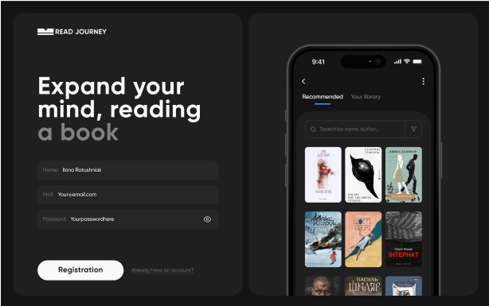
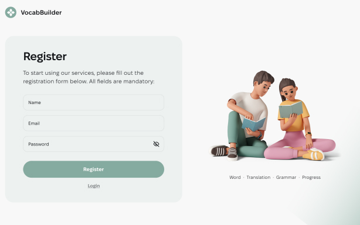

<section id="projects" class="project-section section">
  <h2 class="project-section-header">PROJECTS</h2>

  <!-- Mobile screen markup starts here:-->
  <!-- Upper "light" part -->
  <div class="project-section-light-part">
    <!-- <div class = "project-section-skills"> -->
    <ul class="project-section-skills-list list">
      <li class="project-section-list-skills-item">#react</li>
      <li class="project-section-list-skills-item">#js</li>
      <li class="project-section-list-skills-item">#node js</li>
      <li class="project-section-list-skills-item">#git</li>
    </ul>
    <!-- </div> -->

    <h3 class="project-section-title">
      Programming Across Borders: Ideas, Technologies, Innovations
    </h3>

    <a
      href="#"
      class="link project-section-link"
      aria-label="See project"
      target="_blank"
      rel="noopener noreferer"
    >
      See project
    </a>
  </div>

  <!-- Lower "dark" part -->
  <div class="project-section-dark-part swiper">
    <div class="swiper-wrapper">
        <!-- First slide -->
      <div class="swiper-slide">
        <picture class="project-section-pic">
          <source srcset="../img/project-section/img_desc_1.jpg 1x, ../img/project-section/img_desc_1@2x.jpg 2x" media="(min-width: 1440px)" />

          <source srcset="../img/project-section/img_tab_1.jpg 1x, ../img/project-section/img_tab_1@2x.jpg 2x" media="(min-width: 768px)" />

          <source srcset="../img/project-section/img_mob_1.jpg 1x, ../img/project-section/img_mob_1@2x.jpg 2x" media="(min-width: 375px)" />

          
        </picture>
      </div>

    <!-- Second slide -->
      <div class="swiper-slide">
        <picture class="project-section-pic">
            <source srcset="../img/project-section/img_desc_2.jpg 1x, ../img/project-section/img_desc_2@2x.jpg 2x"
                media="(min-width: 1440px)" />
        
            <source srcset="../img/project-section/img_tab_2.jpg 1x, ../img/project-section/img_tab_2@2x.jpg 2x"
                media="(min-width: 768px)" />
        
            <source srcset="../img/project-section/img_mob_2.jpg 1x, ../img/project-section/img_mob_2@2x.jpg 2x"
                media="(min-width: 375px)" />
        
            
      </div>

    <!-- Third slide -->
      <div class="swiper-slide">
        <picture class="project-section-pic">
            <source srcset="../img/project-section/img_desc_3.jpg 1x, ../img/project-section/img_desc_3@2x.jpg 2x"
                media="(min-width: 1440px)" />
        
            <source srcset="../img/project-section/img_tab_3.jpg 1x, ../img/project-section/img_tab_3@2x.jpg 2x"
                media="(min-width: 768px)" />
        
            <source srcset="../img/project-section/img_mob_3.jpg 1x, ../img/project-section/img_mob_3@2x.jpg 2x"
                media="(min-width: 375px)" />
        
            
      </div>
    </div>
  </div>

  <div class="project-section-buttons">
    <div class="button swiper-button-prev">ArrowLeft
        <svg class="project-section-arrow-left-svg">
            <use></use>
        </svg>
    </div>
    <div class="button swiper-button-next">ArrowRight
            <svg class="project-section-arrow-right-svg">
                <use></use>
            </svg>
    </div>
  </div>
  <!-- Mobile screen markup ends here-->
</section>
